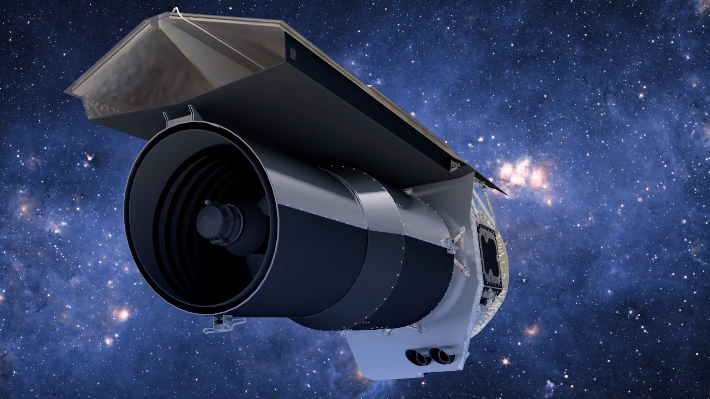

It is our milky way satellite galaxy , that means it kind of revolves around our galaxy , from the year 1519 - 1522 when Ferdinand Magellan was sailing his ship he and his team first time found this galaxy, that's why this galaxy is named on his name Magellan.
The distance of this galaxy from the earth is 158200 Light years approx 50 Kiloparsec far , and it is so close to our galaxy that it is considered as the closest second or third closest galaxy to our galaxy , right now the picture which you are looking is taken by the "JAMES WEBB TELESCOPE" by the Mid Infa Red Instrument also known as (MIRI).
Now you all might be thinking that why there is 2 pictures above.
.png)
The answer for the question is that the blurry picture you are able to see is taken by the "SPITZER SPACE TELESCOPE" a few years ago.
.png)
and the noticable point is that both the picture are taken of the same location and same frame but you can see that the first picture taken by the SPITZER SPACE TELESCOPE is so blur as compared to the second picture taken by JAMES WEBB TELESCOPE.

The James Webb Space Telescope
